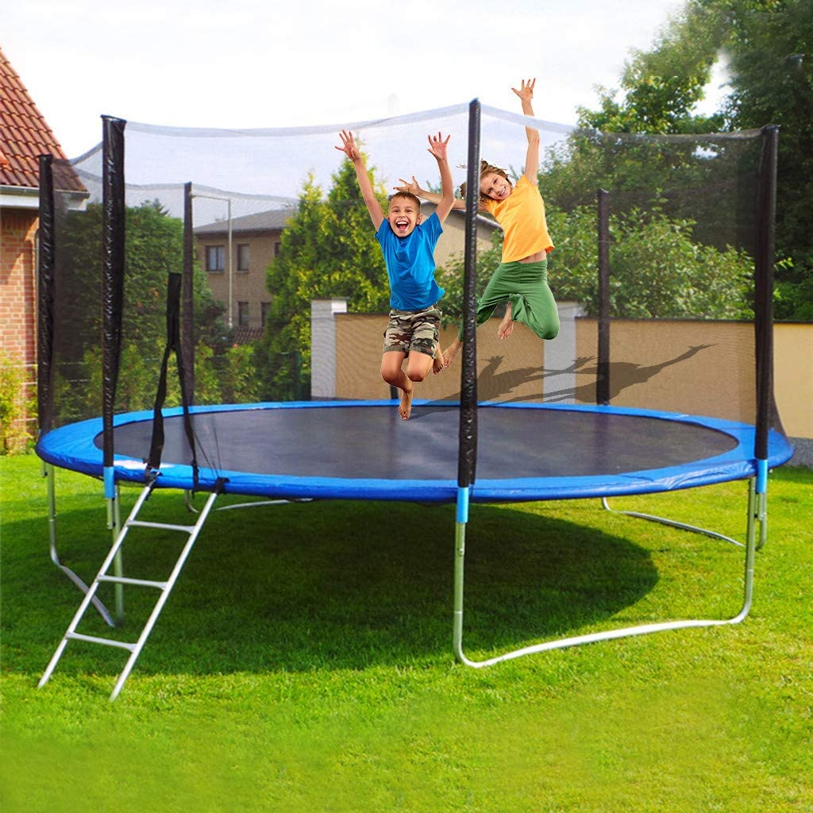

Jumping Castles, Pool & Trampoline
We have put together some jam-packed jumping castles, pool and trampoline packages bundled with top notch sound system
for crystal clear sound, professional photography, or video production packages to deliver more than events and
create unforgettable experiences. If you are searching for a trusted supplier of Jumping Castles,
Pool and Trampoline for hire in Maseru and its neighbouring districts, you are in the right place at Touch Entertainment.
Touch Entertainment offers Jumping Castles, Pool and Trampoline for hire in Lesotho at very competitive prices.
Our castles are kept in top condition and they are washed and inspected after every use.
All our deliveries are always prompt and on time. Jumping castles are ideal for children’s parties,
social functions and year-end functions, providing great entertainment for the kids.
Pool is great for summer parties and social events, ensuring the kids are entertained for hours (and cooled off).
Audio Equipment
As a well-established entertainment company, Touch Entertainment further provides prompt,
reliable service on a wide variety of professional audio equipment hire services.
We offer PA & Sound Systems for the cooperate world, private functions, parties and family events.
We have packages which include top notch speakers, audio mixers and microphones that can be easily
upgraded with wireless microphones to meet the clients varying demands or bigger speakers or subwoofers for bass.
Our phenomenal DJ’s amazing sound and music entertainment will have everyone dancing all party long whilst ensuring
the best service and fun for all to enjoy.
Sound re-enforcement equipment is one of our specialties.
We are able to provide you with industry leading brands such as JBL, RCF, Electro-Voice, Shure, Soundcraft and much more.
The PA & Sound Systems
The PA and Sound Systems are well maintained and kept in top notch condition.
Not only do we rent out top quality equipment but our skilled Technicians and DJs will do the
whole set-up for you so you can focus on the important stuff, like entertaining your guests.
We set up on time every time and our equipment is always in good shape.
Our DJs also regularly update their music collection, spanning across all types of music genres and thousands of songs.
This in return enables them to cater for any age group or function.
The audio and lighting equipment that we use is unobtrusive and state of the art, ensuring colourful lighting display.
Get the party started with a quality Sound Systems from Touch Entertainment and
enjoy crystal clear sound for your quests to enjoy.
Accentric Entertainment package
As with all our Sound re-enforcement equipment and Jumping castles rental products,
Photography and Video packages are also available on request.
Furthermore, we have put together some eccentric entertainment packages and equipment to help add that
extra sparkle to the function.
Our Staff is sharply dressed and make sure we are always on time all the time.